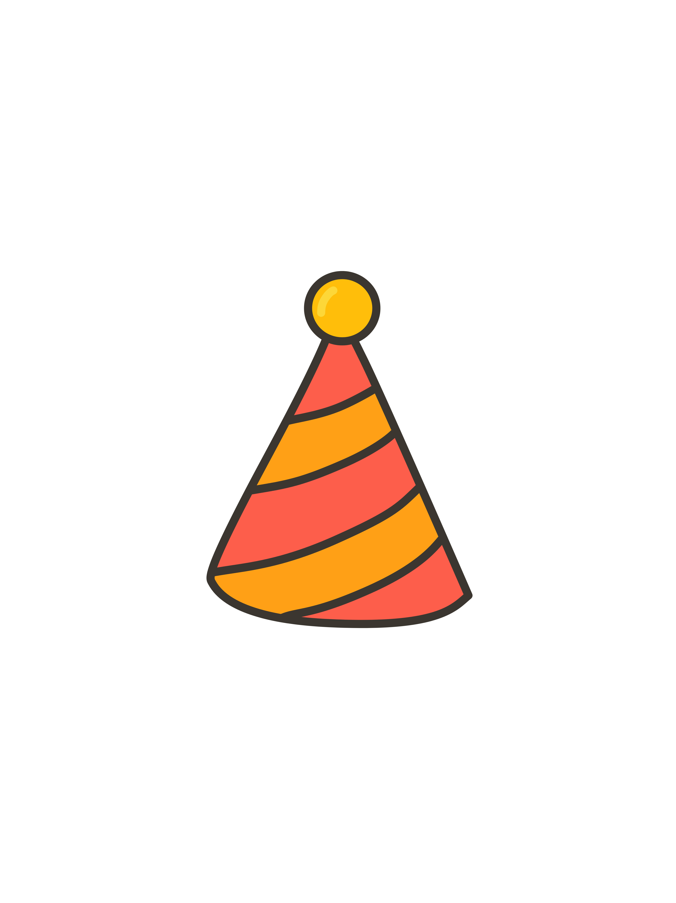
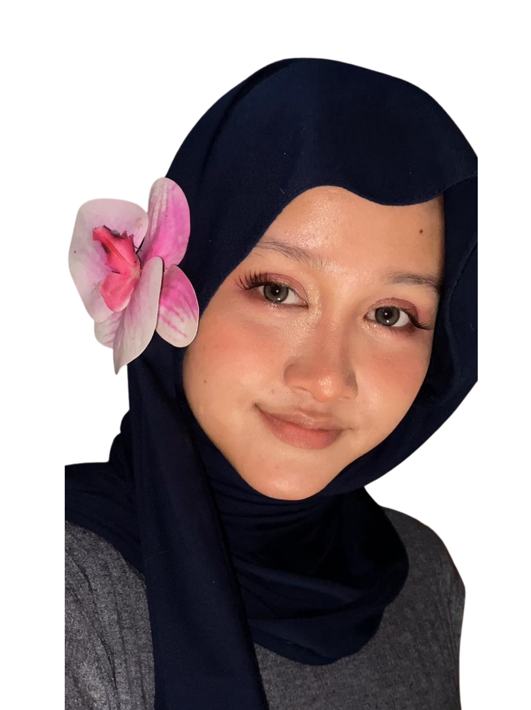
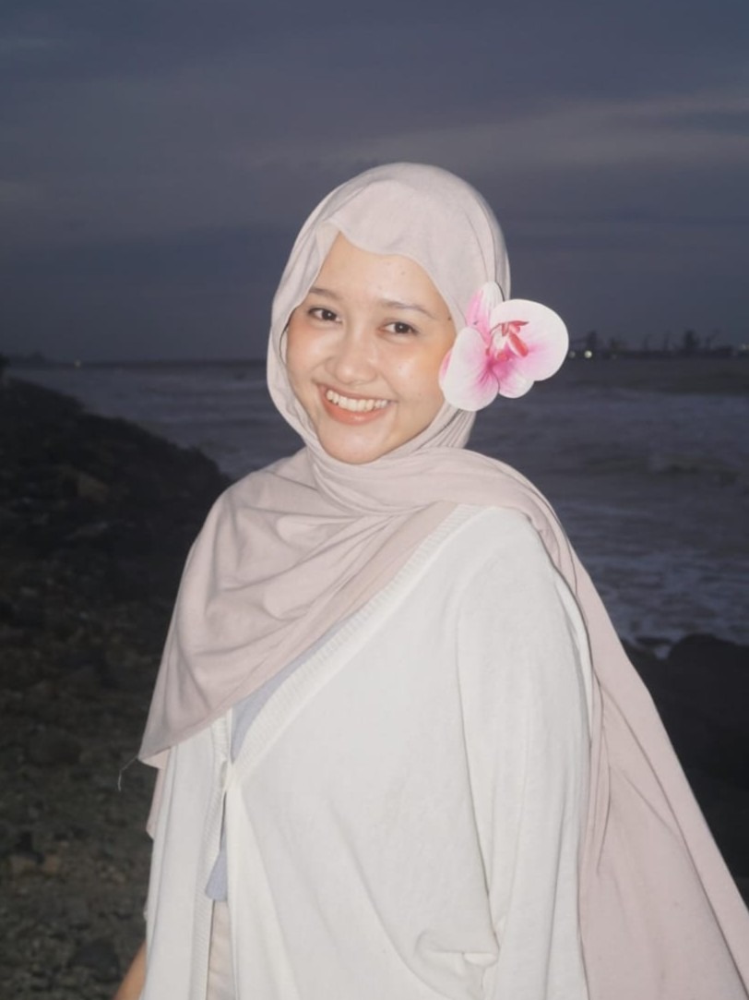
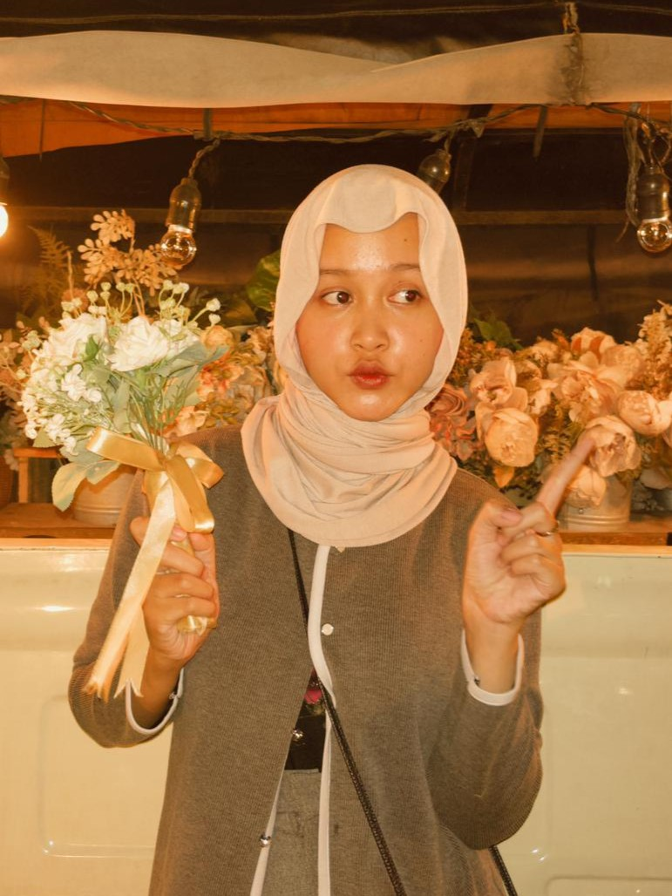
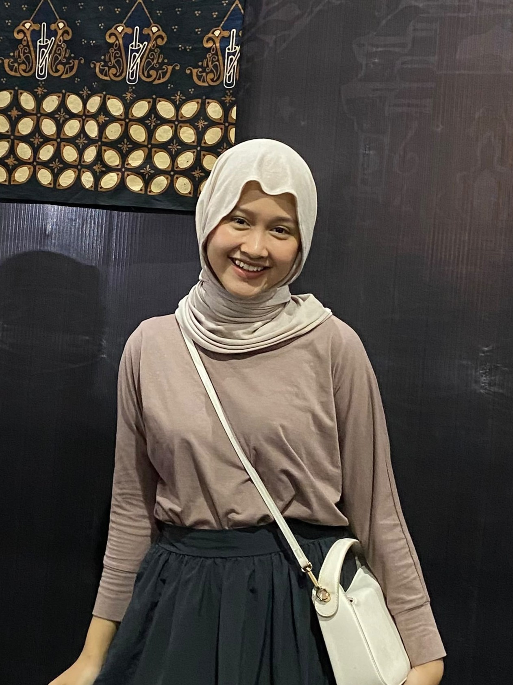
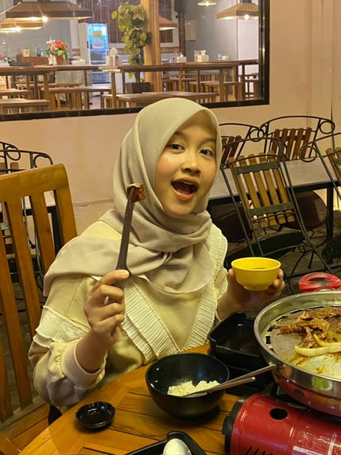
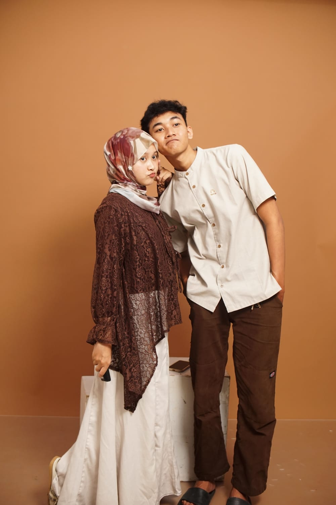
Aku harap hari ini memberikanmu kebahagiaan yang sama seperti kebahagiaan yang selalu kamu berikan ke orang- rang di sekitarmu. Terima kasih sudah menjadi seseorang yang membuat segalanya terasa lebih ringan, tenang, dan berarti.
Seberapa biasa pun hari itu, kamu selalu punya cara untuk membuatnya jadi lebih berkesan. Aku berdoa semoga tahun ini memberimu kesehatan yang baik, kenangan baru yang indah, dan momen momen yang membuatmu bahagia dari hati yang paling dalam.
Walaupun website ini sangat sederhana, setiap bagiannya dibuat sambil memikirkanmu. Selamat ulang tahun sekali lagi. Aku harap harimu terasa spesial dari awal sampai akhir.
Love, Zeken.
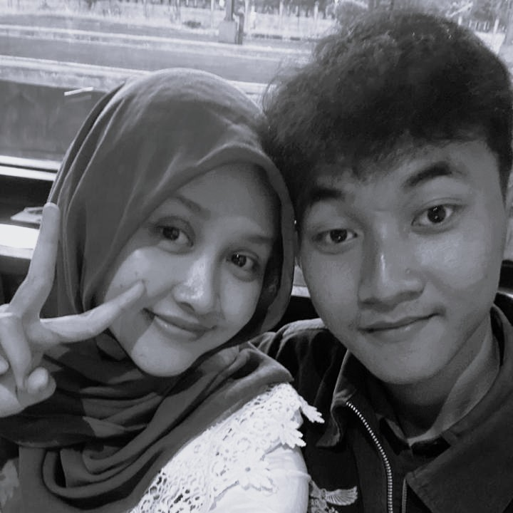
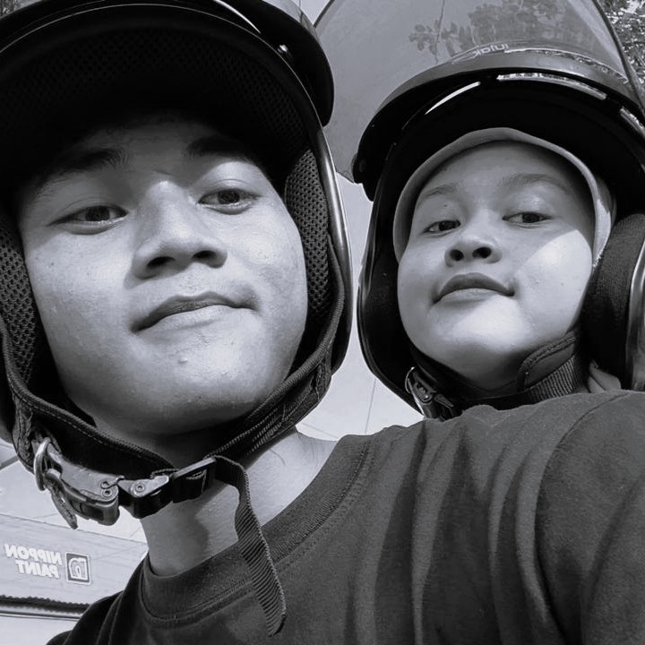
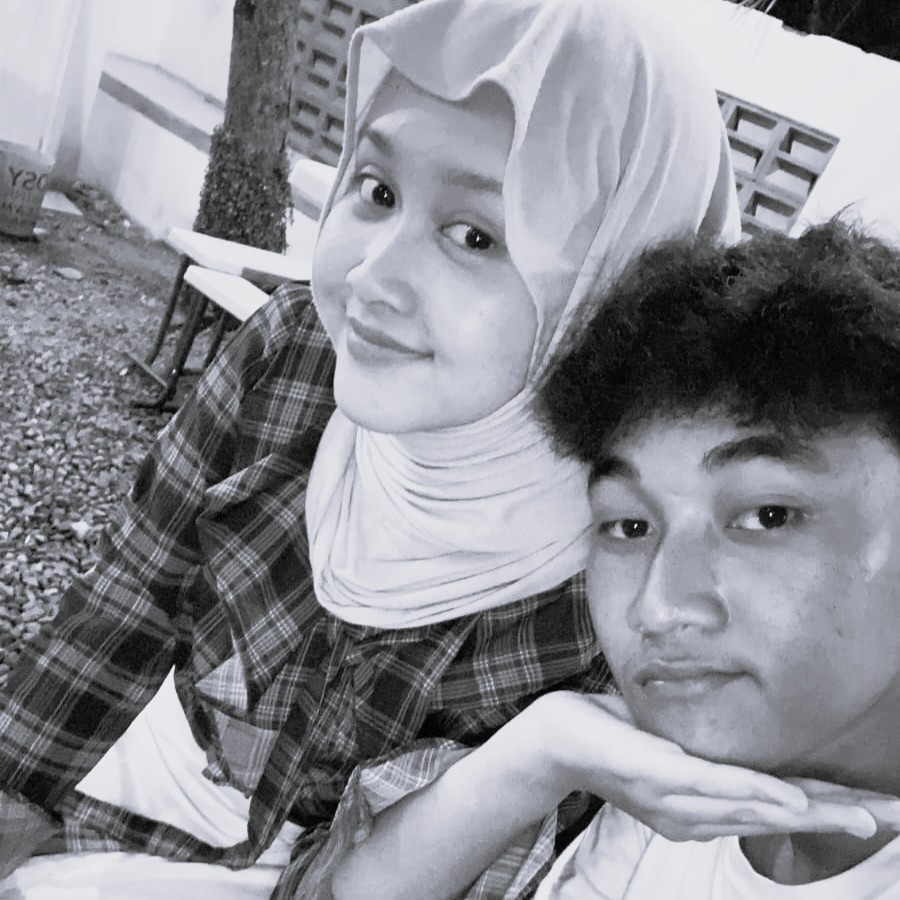
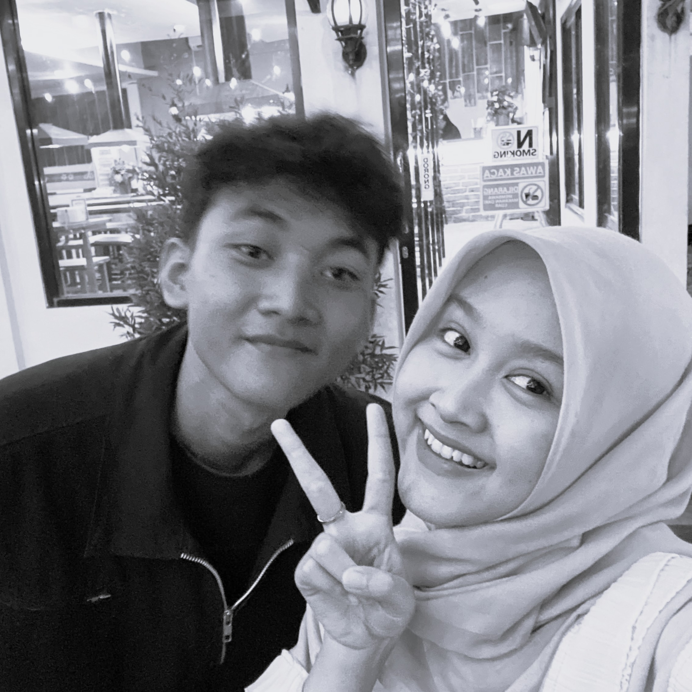
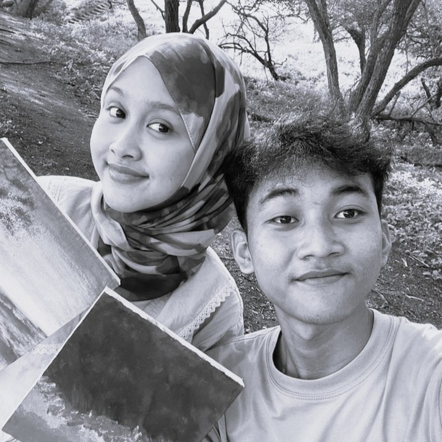
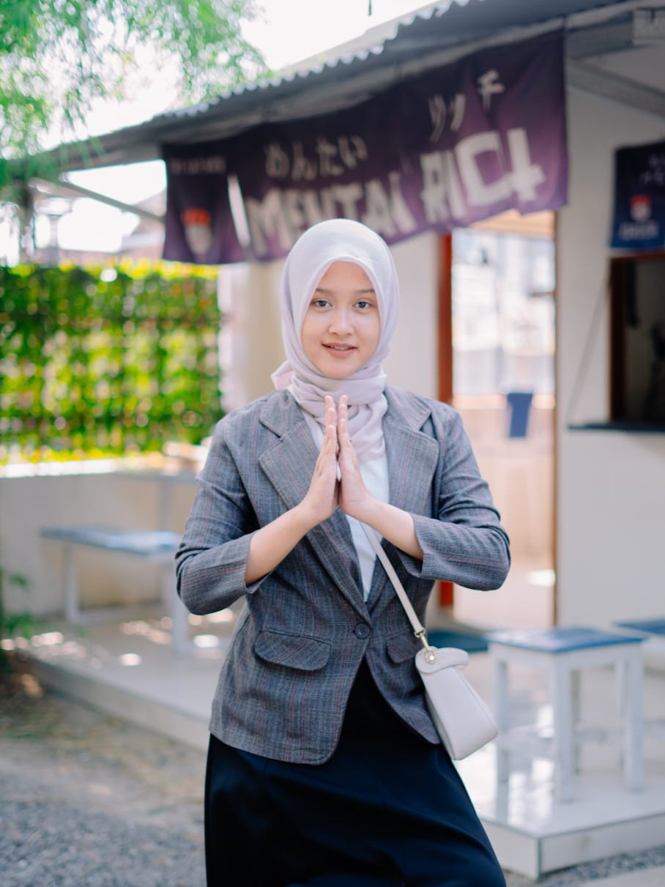
that remind me of you
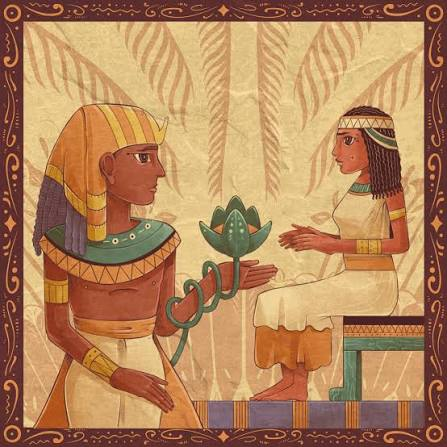
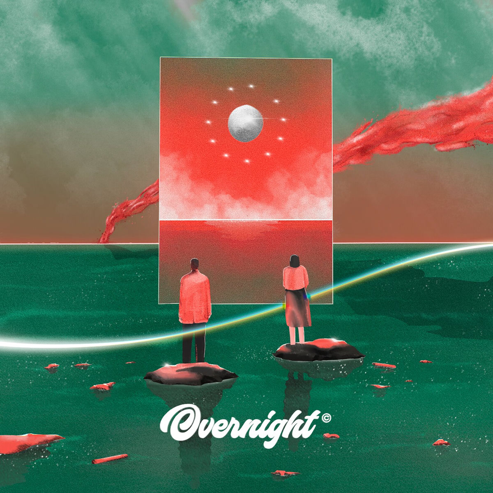
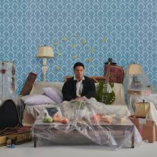